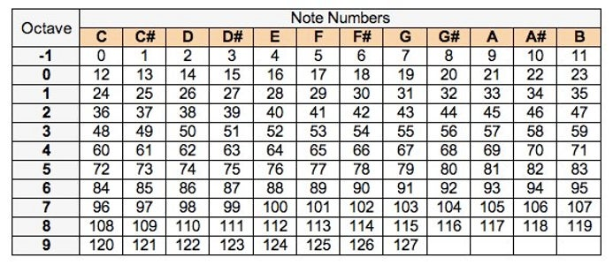

play_pattern_timed
x.times
loop
Watch this video for an introduction to the software.
Video here
Try to program Shape of You for 5 mins
Shape of You starts with:
play 61
Here’s a list of MIDI note numbers to help you convert from notes to numbers:
